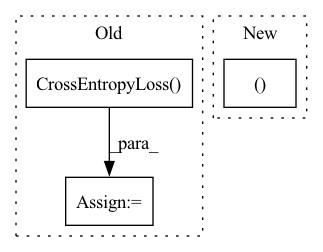

Pattern ID :19623

Before Change
batch = tuple(t.to(self.device) for t in batch)
input_ids, input_mask, segment_ids, label_ids = batch
train_target = Class2Simi(label_ids, mode="cls").detach()
loss_fct = nn.CrossEntropyLoss()
loss = self.model(input_ids, segment_ids, input_mask, train_target, loss_fct = loss_fct, mode = "train")
self.optimizer.zero_grad()
loss.backward()
After Change
loss = tr_loss / nb_tr_steps
eval_true, eval_pred = self.get_outputs(args, mode = "eval")
eval_score = round(accuracy_score(eval_true, eval_pred) * 100, 2)
eval_results = {
In pattern: SUPERPATTERN
Frequency: 3
Non-data size: 3
Instances
Fragment ID: 63964611
Project Name: thuiar/textoir
Commit Name: 4f0068bc25a3a26da045579505b16f4458389c60
Time: 2021-08-02
Author: zhang-hl20@mails.tsinghua.edu.cn
File Name: open_intent_discovery/methods/semi_supervised/KCL_BERT/pretrain.py
M Class Name: PretrainKCLManager
N Class Name: PretrainKCLManager
M Method Name: train(3)
N Method Name: train(3)
M Parent Class:
N Parent Class:
M File Name: open_intent_discovery/methods/semi_supervised/KCL_BERT/pretrain.py
N File Name: open_intent_discovery/methods/semi_supervised/KCL_BERT/pretrain.py
M Start Line: 51
M End Line: 81
N Start Line: 56
N End Line: 113
'>
Before Change
self.prune_finetune_model_path = prune_finetune_model_path
self.train_data_loader = self.dataset.get_dataloader("train")
self.test_data_loader = self.dataset.get_dataloader("test")
self.criterion = torch.nn.CrossEntropyLoss()
self.prunner = FilterPrunner(self.model)
self.layer_name = self.model.get_layer_name()
// def modify_model(self, model):
After Change
self.finetune_lr = finetune_lr
self.finetune_epoch = finetune_epoch
self.clean_dataset, _ = self.dataset.split_set(
self.dataset.get_full_dataset(mode="train"), self.clean_image_num)
self.clean_dataloader = self.dataset.get_dataloader(mode="train", dataset=self.clean_dataset)
self.test_dataloader = self.dataset.get_dataloader(mode="test")
'>
Fragment ID: 63964614
Project Name: ain-soph/trojanzoo
Commit Name: 40f86fd844e5d9860d90dbc0f220621b91084658
Time: 2020-07-03
Author: ain-soph@live.com
File Name: trojanzoo/defense/backdoor/fine_pruning.py
M Class Name: Fine_Pruning
N Class Name: Fine_Pruning
M Method Name: __init__(7)
N Method Name: __init__(8)
M Parent Class:
N Parent Class:
M File Name: trojanzoo/defense/backdoor/fine_pruning.py
N File Name: trojanzoo/defense/backdoor/fine_pruning.py
M Start Line: 140
M End Line: 157
N Start Line: 164
N End Line: 173
'>
Before Change
base_model = GPTModel(**config)
model = GPTLMHeadModel(base_model)
loss_fct = paddle.nn.loss.CrossEntropyLoss()
logits = model(input_ids)
loss = loss_fct(logits, input_ids)
self.parent.assertEqual(loss.shape, [1])
After Change
model = GPTLMHeadModel(base_model)
if self.parent.use_labels:
loss, logits = model(input_ids, labels=input_ids, return_dict=self.parent.return_dict)
self.parent.assertEqual(loss.shape, [1])
self.parent.assertEqual(logits.shape, [self.batch_size, self.seq_length, self.vocab_size])
loss.backward()
'>
Fragment ID: 63964615
Project Name: paddlepaddle/paddlenlp
Commit Name: db3bde142ca2da76bfc701cd4ecc17140c248060
Time: 2022-12-06
Author: 40912707+Yam0214@users.noreply.github.com
File Name: tests/transformers/gpt/test_modeling.py
M Class Name: GPTModelTester
N Class Name: GPTModelTester
M Method Name: create_and_check_forward_and_backwards(4)
N Method Name: create_and_check_forward_and_backwards(4)
M Parent Class:
N Parent Class:
M File Name: tests/transformers/gpt/test_modeling.py
N File Name: tests/transformers/gpt/test_modeling.py
M Start Line: 292
M End Line: 298
N Start Line: 318
N End Line: 324